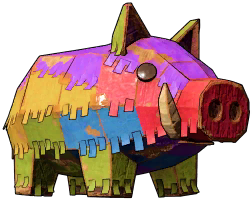
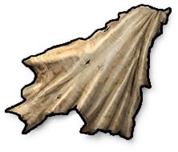

O
OXIDE
ITEM DATABASE
物品
分类
回收
攻击力
防御力
威胁
关于
中 / EN
STATIC DATA
首页
/
其他
/
彩罐
其他
彩罐
Pinata
ITEM · OTHER

Pinata / OTHER
制造配方
CRAFTING RECIPE
木材
Wood
×5
→

布
Cloth
×3
→
获取方式
HOW TO OBTAIN
奖励/商店
可通过奖励或商店获得